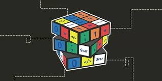
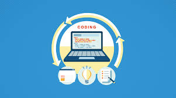

Um site criado para dar uma luz a pessoas que desejam ser programadores, aqui encontrará um apoio a mais nesse jornada.
Conte conosco!
Algumas dicas de como ser um programador:
Se você alguma vez já pensou, ou deseja entrar para a área de Tecnologia da informação, em especifico "Programador". Neste artigo irá encontrar algumas dicas do que será nescessário para alcançar este objetivo.
Aprender as linguagens de programação: Existem diversas linguagens de programação disponíveis, como Java, C++, Python, entre outras. É importante escolher uma ou algumas linguagens e dedicar tempo para aprender e dominar suas características e sintaxe.

Praticar: A prática é essencial para se tornar um bom programador. Programar regularmente permite que você desenvolva habilidades técnicas, resolva problemas e ganhe experiência.
Estudar algoritmos e estruturas de dados: É importante entender como os algoritmos funcionam e como as diferentes estruturas de dados podem ser usadas para resolver problemas de forma eficiente.

Aprender a resolver problemas: Programadores são frequentemente desafiados a resolver problemas complexos. Desenvolver habilidades de resolução de problemas é essencial para se tornar um bom programador.
Participar de projetos e colaborar com outros programadores: Trabalhar em projetos de código aberto ou colaborar com outros programadores em projetos pode ser uma ótima maneira de desenvolver suas habilidades e aprender com os outros.

Manter-se atualizado: A tecnologia está sempre evoluindo e é importante manter-se atualizado com as tendências e novidades do setor de programação.

Construir um portfólio: Ter um portfólio de projetos pessoais e profissionais é uma ótima maneira de mostrar suas habilidades e experiência como programador.

Ter determinação e paciência: Aprender a programar pode ser desafiador e requer paciência e determinação para superar obstáculos e continuar melhorando suas habilidades.
Em resumo, para ser um bom programador é necessário prática, estudo contínuo, resolução de problemas, colaboração com outros programadores e determinação para superar desafios.
Contato